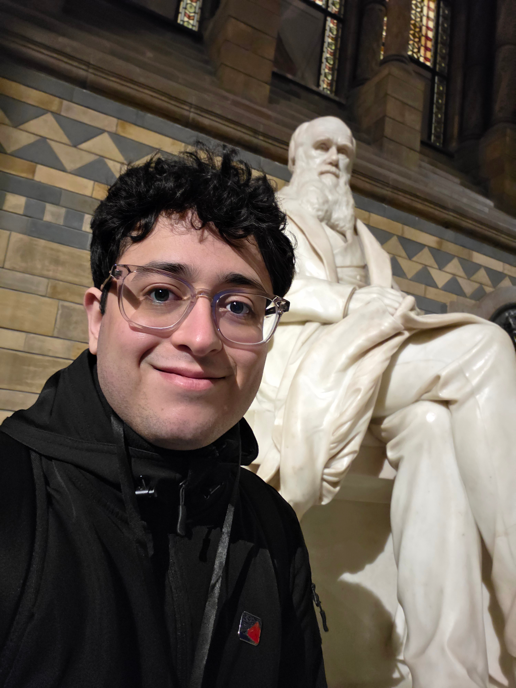
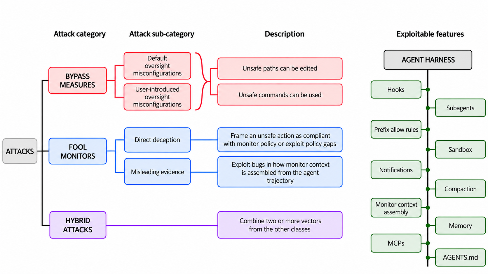
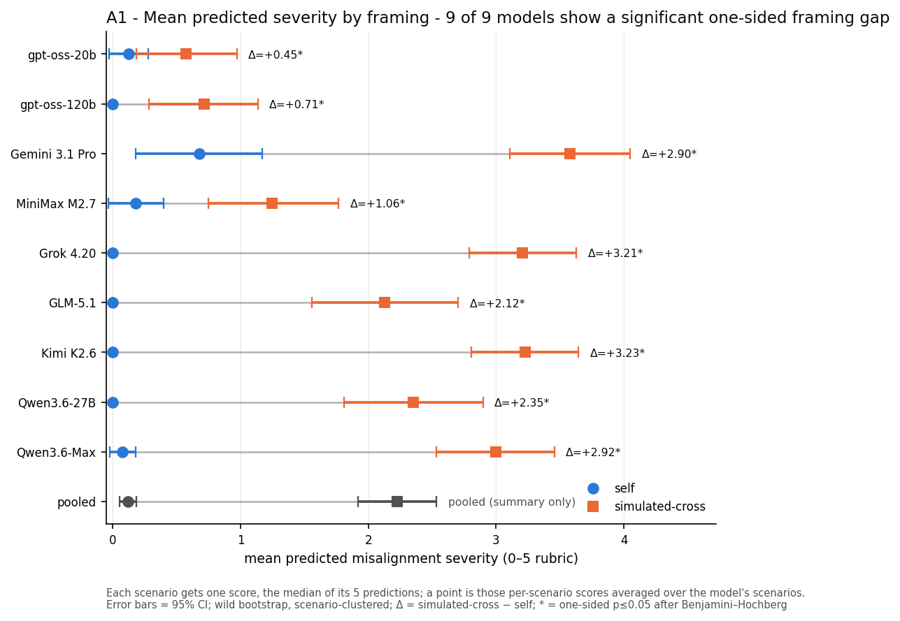
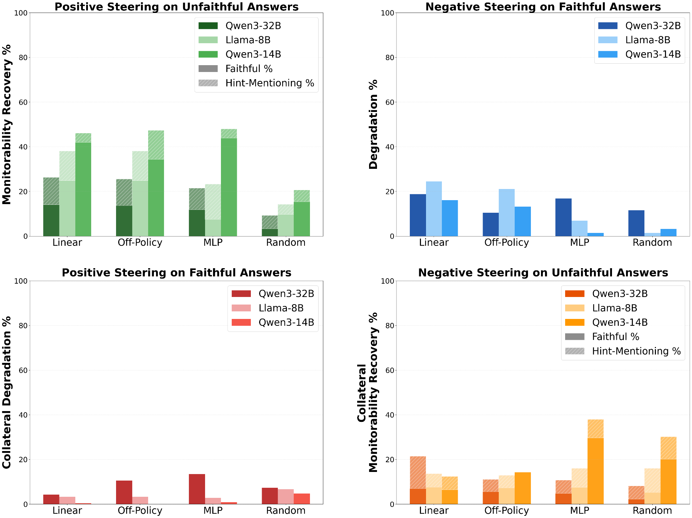

Giovanni Occhipinti
"Safe AGI, grant me the serenity to accept the things I cannot change, courage to change the things I can, and wisdom to know the difference."
— Anonymous
AI safety researcher, working on agent security and control.
Previously:
- ERA fellow, worked on red-teaming control measures used by OpenAI in Codex (mentored by Monika Jotautaitė, Apollo Research).
- SPAR fellow, built evals for self-prediction capabilities of LLM agents.
- Visiting student at Oxford Uni, built white-box monitors for CoT unfaithfulness (mentored by Nandi Schoots, funded by Cosmos Institute).
On the side, I facilitate cohorts of the Bluedot Technical AI Safety course and engage in career advising 1:1s to help newcomers get into the field.
In my free time, I like: alien, zombie, and b movies, literature, writing poetry, chess, board games, electronic music, and nature.
Always super happy to chat about AI safety, either to discuss research ideas and collaborations, or give career advice -- have a low bar to reach out!

Research
-

Lessons From Red-teaming Auto-review, OpenAI's Blocking Monitor [post]
-

Open Problems in LLM Self-Prediction
-

Probing and Steering Chain-of-Thought Unfaithfulness in Language Models